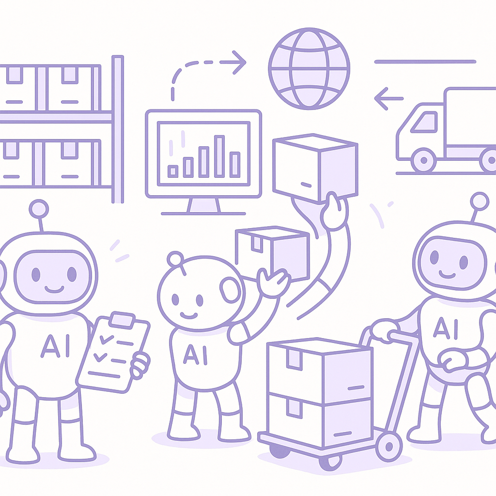

Publishing Recommendation
reviseThe drafts contain several instances of hype and unsupported claims, particularly around the 'game-changer' narrative and AI capabilities. The tone needs adjustment to align with our brand's practical and evidence-backed style.
Today's drafts offer insightful angles on emerging trends in AI and commerce, but they need refinement. The content should avoid hype and provide more concrete evidence and examples to support claims, ensuring alignment with our brand's practical and credible voice. Adjustments are necessary to eliminate any exaggerated language and ensure all posts deliver practical value to our audience.
LinkedIn Posts (8)
1. Meta's Muse Blocks Amazon Access, Shopify Integration Planned ★ Purands solution · high priority
CTA: How do you see Shopify's integration with Meta's Muse impacting your retention strategies?
Alternative hooks
- Shopify's integration with Meta's Muse could redefine e-commerce in APAC.
- Amazon blocks Meta's Muse - but Shopify steps up.
- Meta's Muse is transforming how we shop on mobile.
Research behind this post (sources, summaries & confidence)
Meta's Muse Blocks Amazon Access, Shopify Integration Planned conf 0.80 · Shopify ecosystem
Meta's Muse is a rapidly growing AI agent that has been blocked from accessing Amazon. However, Shopify plans to integrate Muse for one-tap purchases, highlighting a significant shift in e-commerce dynamics, especially in APAC where mobile and messaging-first commerce is prevalent. This could impact retention strategies as platforms leverage AI for seamless shopping experiences.
Sources & what I took from each
- Meta Muse is outpacing ChatGPT's early mobile launch.: Reported by TechCrunch, indicating rapid adoption and growth in comparison to other AI agents. ↗ read source
- Meta's AI agent has been blocked from using Amazon.com.: Confirmed by TechCrunch, indicating a strategic move possibly due to competition. ↗ read source
- Shopify plans to allow Meta's Muse to complete purchases on behalf of users.: Reported by TechMeme, suggesting integration plans with Shopify. ↗ read source
Examples
- Meta's Muse being integrated into Shopify for one-tap purchases.
Recent news
- Meta's Muse AI agent being blocked by Amazon and potential integration with Shopify.
Original trend links
- https://techcrunch.com/2026/09/21/metas-muse-is-outpacing-chatgpts-early-mobile-launch/
- https://techcrunch.com/2026/09/21/metas-ai-agent-has-been-blocked-from-using-amazon-com/
- https://www.techmeme.com/260921/p55#a260921p55
Risks / caveats
- Potential backlash from Amazon and competitive response.
- Dependence on integration success with Shopify for market impact.
2. WhatsApp Commerce: New Tools for Small Merchants ★ Purands solution · high priority
CTA: How do you see WhatsApp changing the way small businesses engage with customers?
{kind=link}
Image prompt · isometric-flat
Caption: WhatsApp as a sales channel for small merchants.
Alternative hooks
- In APAC, WhatsApp is more than a messaging app; it's a sales powerhouse.
- Small merchants in APAC are redefining customer engagement through WhatsApp.
- Open-source tools are transforming WhatsApp commerce for small businesses.
Research behind this post (sources, summaries & confidence)
WhatsApp Commerce: New Tools for Small Merchants conf 0.70 · WhatsApp commerce
With the rise of mobile-first commerce in APAC, WhatsApp continues to be a vital channel. New open-source projects and tools for WhatsApp-based commerce platforms are emerging, offering small merchants enhanced capabilities to engage customers and drive retention.
Sources & what I took from each
- WhatsApp-based commerce platform for small supermarkets.: GitHub project 'Shelver' indicates a focus on small supermarkets. ↗ read source
- Asistente inteligente por WhatsApp for e-commerce.: GitHub project 'ClarificadorCompras' provides tools for e-commerce via WhatsApp. ↗ read source
Examples
- Open-source tools like Shelver and ClarificadorCompras.
Original trend links
Risks / caveats
- Reliance on GitHub projects may limit adoption if not maintained.
- Potential competition from larger, proprietary platforms.
3. Loyalty Program Innovations in the Shopify Ecosystem ★ Purands solution · high priority
CTA: How have loyalty programs impacted your business strategies?
{kind=link}
Image prompt · isometric-flat
Caption: AI-driven loyalty program innovations.
Alternative hooks
- Shopify loyalty apps are reshaping how APAC merchants engage customers.
- Loyalty programs are more than points - they're strategic tools in APAC.
- What's the secret behind Shopify's evolving loyalty programs?
Research behind this post (sources, summaries & confidence)
Loyalty Program Innovations in the Shopify Ecosystem conf 0.70 · Shopify ecosystem
Loyalty programs remain a cornerstone of customer retention strategies. New Shopify apps focusing on loyalty and rewards signal ongoing innovation and competition in this space, particularly relevant for APAC merchants seeking to enhance customer loyalty.
Sources & what I took from each
- Shopify loyalty app: points, VIP tiers, referrals.: GitHub project 'loyalty-pulse' indicates features for loyalty programs. ↗ read source
- Loyalty and rewards app for Shopify.: GitHub project 'loyalty-and-rewards' suggests focus on loyalty strategies. ↗ read source
Examples
- Apps like loyalty-pulse and loyalty-and-rewards for Shopify.
Original trend links
Risks / caveats
- Market saturation with similar loyalty apps.
- Dependence on Shopify's platform policies and updates.
4. Customer Data Platforms: Real-Time Engagement Platforms Emerge ★ Purands solution · high priority
CTA: How do you think real-time data can transform customer engagement in your market?
Alternative hooks
- Open-source platforms are reshaping retention marketing in APAC.
- Real-time engagement is the key to customer retention in diverse markets.
- APAC's diverse markets need personalized marketing - here's how we do it.
Research behind this post (sources, summaries & confidence)
Customer Data Platforms: Real-Time Engagement Platforms Emerge conf 0.60 · Customer Data Platforms
The development of open-source, real-time customer engagement platforms is significant for retention marketing. These platforms enable better identity resolution and audience segmentation, key for personalized marketing efforts in APAC's diverse markets.
Sources & what I took from each
- Open-source, event-driven Customer Data & Engagement Platform.: GitHub project 'MessageBirds' indicates development in customer engagement platforms. ↗ read source
Examples
- Use of MessageBirds for real-time customer data engagement.
Original trend links
Risks / caveats
- Open-source solutions may face scalability and support challenges.
- Adoption could be limited by market readiness and technical expertise.
5. Alibaba's Advances in AI for Image Generation
CTA: How do you see AI like Qwen-Image-2.1 affecting customer engagement?
Alternative hooks
- Alibaba's new AI model is changing the game in image generation.
- Personalized marketing just got a lot more sophisticated.
- AI-generated content isn't just sci-fi anymore, it's business reality.
Research behind this post (sources, summaries & confidence)
Alibaba's Advances in AI for Image Generation conf 0.80 · AI startups
Alibaba's release of an advanced AI model for image generation reflects the growing sophistication of AI tools being developed in APAC. These tools can be leveraged for personalized marketing and enhanced customer engagement.
Sources & what I took from each
- Alibaba Qwen Releases Qwen-Image-2.1: A 7B Open-Weight Model for Image Generation and Editing.: Reported by MarkTechPost, highlighting technological advancements and potential applications. ↗ read source
Examples
- Alibaba's Qwen-Image-2.1 used in marketing for personalized content.
Recent news
- Release of Alibaba's Qwen-Image-2.1 model for image generation and editing.
Original trend links
Risks / caveats
- Potential ethical concerns with AI-generated content.
- Competition from other AI models in the market.
6. California's Regulation of AI Data Centers
CTA: How do you see these regulations affecting your region's tech ecosystem?
Alternative hooks
- California's new AI data center regulations are stirring the pot.
- How will California's rules on AI data centers reshape tech?
- California's AI data center regulations: a glimpse into the future?
Research behind this post (sources, summaries & confidence)
California's Regulation of AI Data Centers conf 0.70 · AI industry
New regulations on AI data centers in California may influence global tech policies, impacting APAC's tech ecosystem, especially for companies reliant on cloud-based AI services.
Sources & what I took from each
- California tightens rules on AI data center energy and water use.: Reported by The Verge, indicating regulatory changes that may set a precedent. ↗ read source
Recent news
- California's new regulations on AI data centers' resource usage.
Original trend links
Risks / caveats
- Increased operational costs for data centers.
- Potential impact on global tech policies and practices.
7. Multi-Agent AI Systems in Supply Chain Execution
CTA: How do you see multi-agent systems changing supply chains in your region?

⬇ Download image{kind=link}
Image prompt · isometric-flat
Caption: Multi-agent AI systems in supply chains.
Alternative hooks
- Supply chains are meeting their match: multi-agent AI systems.
- APAC's fast-paced markets demand smarter supply chains.
- Logistics optimization is evolving with multi-agent AI.
Research behind this post (sources, summaries & confidence)
Multi-Agent AI Systems in Supply Chain Execution conf 0.60 · AI startups
The shift towards multi-agent AI systems for supply chain execution can significantly impact logistics and customer fulfillment, key components of retention strategies in APAC's fast-paced markets.
Sources & what I took from each
- Multi-agent AI systems are taking over supply chain execution.: Reported by Artificial Intelligence News, indicating a trend in logistics optimization. ↗ read source
Examples
- Use of multi-agent AI systems in optimizing supply chains.
Original trend links
Risks / caveats
- Complexity in implementation and integration with existing systems.
- Dependence on AI for critical supply chain functions may introduce vulnerabilities.
8. OpenAI's Math Advisory Group and AI Advancements
CTA: How do you see the role of math evolving in AI development?
Alternative hooks
- OpenAI is solving more than just equations.
- What's the future of AI without math?
- AI advancements start with solid math.
Research behind this post (sources, summaries & confidence)
OpenAI's Math Advisory Group and AI Advancements conf 0.50 · AI industry
OpenAI's formation of a math advisory group underscores the importance of responsible AI advancements. This is relevant for retention marketing as AI's role in predictive analytics and customer behavior modeling grows.
Sources & what I took from each
- OpenAI forms math advisory group.: Reported by TechCrunch, emphasizing responsible AI advancements. ↗ read source
Recent news
- OpenAI's initiative to ensure responsible AI development with a focus on mathematical challenges.
Original trend links
Risks / caveats
- Unclear direct impact on retention marketing.
- Focus on mathematical problems may not directly translate to commercial applications.
Today's Trends
| # | Trend | Category | Why it matters |
|---|---|---|---|
| 1 | Meta's Muse Blocks Amazon Access, Shopify Integration Planned
source source source |
Shopify ecosystem | Meta's Muse is a rapidly growing AI agent that has been blocked from accessing Amazon. However, Shopify plans to integrate Muse for one-tap purchases, highlighting a significant shift in e-commerce dynamics, especially in APAC where mobile and messaging-first commerce is prevalent. This could impact retention strategies as platforms leverage AI for seamless shopping experiences. |
| 2 | WhatsApp Commerce: New Tools for Small Merchants
source source |
WhatsApp commerce | With the rise of mobile-first commerce in APAC, WhatsApp continues to be a vital channel. New open-source projects and tools for WhatsApp-based commerce platforms are emerging, offering small merchants enhanced capabilities to engage customers and drive retention. |
| 3 | Customer Data Platforms: Real-Time Engagement Platforms Emerge
source |
Customer Data Platforms | The development of open-source, real-time customer engagement platforms is significant for retention marketing. These platforms enable better identity resolution and audience segmentation, key for personalized marketing efforts in APAC's diverse markets. |
| 4 | OpenAI's Math Advisory Group and AI Advancements
source |
AI industry | OpenAI's formation of a math advisory group underscores the importance of responsible AI advancements. This is relevant for retention marketing as AI's role in predictive analytics and customer behavior modeling grows. |
| 5 | Loyalty Program Innovations in the Shopify Ecosystem
source source |
Shopify ecosystem | Loyalty programs remain a cornerstone of customer retention strategies. New Shopify apps focusing on loyalty and rewards signal ongoing innovation and competition in this space, particularly relevant for APAC merchants seeking to enhance customer loyalty. |
| 6 | Alibaba's Advances in AI for Image Generation
source |
AI startups | Alibaba's release of an advanced AI model for image generation reflects the growing sophistication of AI tools being developed in APAC. These tools can be leveraged for personalized marketing and enhanced customer engagement. |
| 7 | Multi-Agent AI Systems in Supply Chain Execution
source |
AI startups | The shift towards multi-agent AI systems for supply chain execution can significantly impact logistics and customer fulfillment, key components of retention strategies in APAC's fast-paced markets. |
| 8 | California's Regulation of AI Data Centers
source |
AI industry | New regulations on AI data centers in California may influence global tech policies, impacting APAC's tech ecosystem, especially for companies reliant on cloud-based AI services. |
Risk Assessment
- Exaggerated claims about AI's impact, particularly with phrases like 'game-changer'.
- Potential factual inaccuracies in the depiction of market dynamics without sufficient evidence.
- Tone occasionally drifts into corporate clichés, which does not align with our brand voice.
Suggested LinkedIn Comments (30)
Open each post, then paste the copied comment. Nothing is posted automatically.
1. insight · rss:techcrunch.com — Apple Store architect Ron Johnson says Apple's secret sauce has always been its
Post by: rss:techcrunch.com
Why it works: Adds depth by highlighting the ecosystem's role in leveraging people as a competitive advantage.
↗ Open LinkedIn post to paste comment2. opinion · rss:techcrunch.com — The group won't be given leeway to slow down or redirect OpenAI's ongoing mathem
Post by: rss:techcrunch.com
Why it works: Takes a stance on the balance between oversight and innovation, aligning with OpenAI's ongoing research priorities.
↗ Open LinkedIn post to paste comment3. insight · rss:techcrunch.com — Five days left to save up to $200 on your TechCrunch Disrupt 2026 pass + 50% off
Post by: rss:techcrunch.com
Why it works: Shifts focus from the cost savings to the long-term value of networking and learning at such events.
↗ Open LinkedIn post to paste comment4. insight · rss:techcrunch.com — Meta’s new AI agent Muse has racked up more downloads and daily active users in
Post by: rss:techcrunch.com
Why it works: Connects Muse's success to user experience, offering a lesson on what really drives adoption.
↗ Open LinkedIn post to paste comment5. insight · rss:techcrunch.com — Future Google supplier Kairos Power inked a deal with Samsung C&T to help b
Post by: rss:techcrunch.com
Why it works: Highlights the strategic advantage of the partnership, adding a perspective on clean energy innovation.
↗ Open LinkedIn post to paste comment6. opinion · rss:techcrunch.com — Amazon has its own cohort of foundation models, along with one of the most popul
Post by: rss:techcrunch.com
Why it works: Expresses a clear viewpoint on Amazon's strategic decisions, considering market dynamics.
↗ Open LinkedIn post to paste comment7. opinion · rss:techcrunch.com — X is expanding its “Under the Hood” transparency tool to show when posts have be
Post by: rss:techcrunch.com
Why it works: Acknowledges the importance of transparency, emphasizing its role in fostering accountability.
↗ Open LinkedIn post to paste comment8. insight · rss:techcrunch.com — Forerunner Ventures plans to sell its entire stake in Oura for as much as $1.26
Post by: rss:techcrunch.com
Why it works: Provides perspective on the implications of a large-scale stake sale, adding strategic context.
↗ Open LinkedIn post to paste comment9. insight · rss:techcrunch.com — Tabby is designed to be a real-time bookkeeping interface, handling clients’ pap
Post by: rss:techcrunch.com
Why it works: Highlights the operational benefits of real-time data, reinforcing the practical impact of Tabby.
↗ Open LinkedIn post to paste comment10. opinion · rss:techcrunch.com — Where will the next breakout startup come from? Benchmark’s full partnership wei
Post by: rss:techcrunch.com
Why it works: Offers a specific prediction on startup trends, providing a forward-looking perspective.
↗ Open LinkedIn post to paste comment11. insight · rss:www.theverge.com — Hundreds of flights were cancelled or delayed on Monday after construction crews
Post by: rss:www.theverge.com
Why it works: It adds a practical observation about infrastructure redundancy, offering a deeper layer of analysis to the situation.
↗ Open LinkedIn post to paste comment12. opinion · rss:www.theverge.com — Amazon plans to spend $20 million on water conservation projects along the Color
Post by: rss:www.theverge.com
Why it works: The comment acknowledges the initiative while expressing skepticism about its potential impact, providing a balanced perspective.
↗ Open LinkedIn post to paste comment13. expansion · rss:www.theverge.com — California Gov. Gavin Newsom has signed seven bills designed to prevent AI data
Post by: rss:www.theverge.com
Why it works: It expands on the implications of the legislation, suggesting a potential positive outcome that wasn't explicitly mentioned in the post.
↗ Open LinkedIn post to paste comment14. insight · rss:www.theverge.com — Last week, GM announced a new software experience for its upcoming Chevy Silvera
Post by: rss:www.theverge.com
Why it works: The comment ties GM's decision back to broader trends in tech adoption, offering a take on consumer behavior.
↗ Open LinkedIn post to paste comment15. opinion · rss:www.theverge.com — Paramount has reached a settlement with California and the 11 other states that
Post by: rss:www.theverge.com
Why it works: It presents a critical view on media consolidation, encouraging the reader to consider the broader implications.
↗ Open LinkedIn post to paste comment16. insight · rss:www.theverge.com — Months after seemingly giving up on Destiny 2, Bungie now says it's planning to
Post by: rss:www.theverge.com
Why it works: The comment connects the decision to broader principles of customer engagement and retention, relevant to gaming and beyond.
↗ Open LinkedIn post to paste comment17. insight · rss:www.theverge.com — Newegg is hosting a bundle that includes Microsoft’s wireless Xbox controller (i
Post by: rss:www.theverge.com
Why it works: The comment highlights the strategic aspect of the bundle, providing a business perspective on the offer.
↗ Open LinkedIn post to paste comment18. insight · rss:www.theverge.com — Today, I’m talking with Mark Gurman, who is the world’s best-sourced Apple repor
Post by: rss:www.theverge.com
Why it works: By focusing on Gurman's skill, the comment provides a specific angle on the value of high-quality journalism in tech.
↗ Open LinkedIn post to paste comment19. insight · rss:www.theverge.com — Apple is paying $250 million to settle claims that it failed to deliver an AI-up
Post by: rss:www.theverge.com
Why it works: It draws attention to the broader theme of corporate accountability in AI, adding depth to the post's information.
↗ Open LinkedIn post to paste comment20. insight · rss:www.theverge.com — Vivo's new X500 flagship phones have arrived in China, and as usual the company'
Post by: rss:www.theverge.com
Why it works: The comment ties Vivo's product strategy to broader market trends, offering a lens on consumer-driven innovation.
↗ Open LinkedIn post to paste comment21. insight · rss:feeds.arstechnica.com — A simple ClickFix attack is only one way to completely hijack the new agent.
Post by: rss:feeds.arstechnica.com
Why it works: It adds depth by focusing on the human element in tech vulnerabilities, a critical but often neglected aspect.
↗ Open LinkedIn post to paste comment22. opinion · rss:feeds.arstechnica.com — Drone boat battle occurs as Ukraine and Russia target Black Sea ports and ships.
Post by: rss:feeds.arstechnica.com
Why it works: It offers a perspective on how tech shifts require quick strategic changes, broadening the discussion.
↗ Open LinkedIn post to paste comment23. expansion · rss:feeds.arstechnica.com — The new carmaker is a joint venture between the Saudi PIF and Foxconn.
Post by: rss:feeds.arstechnica.com
Why it works: It expands on the potential impact of this venture, adding a layer of strategic analysis.
↗ Open LinkedIn post to paste comment24. insight · rss:feeds.arstechnica.com — A third-party cybersecurity firm accidentally gave experimental Gemini models ac
Post by: rss:feeds.arstechnica.com
Why it works: It provides a nuanced view on the pros and cons of real-world testing, enhancing the discussion.
↗ Open LinkedIn post to paste comment25. opinion · rss:feeds.arstechnica.com — Pending move comes over the objections of the NIH director.
Post by: rss:feeds.arstechnica.com
Why it works: It offers a balanced view on the need to balance innovation with oversight, adding depth to the topic.
↗ Open LinkedIn post to paste comment26. insight · rss:feeds.arstechnica.com — State AGs had "very strong" case that merger is illegal, Lina Khan says.
Post by: rss:feeds.arstechnica.com
Why it works: It contextualizes the statement within broader antitrust trends, offering a long-term perspective.
↗ Open LinkedIn post to paste comment27. respectful challenge · rss:feeds.arstechnica.com — The president offered few details on what his proposed new AI Force would do.
Post by: rss:feeds.arstechnica.com
Why it works: It challenges the lack of clarity in a constructive way, emphasizing the need for clear objectives.
↗ Open LinkedIn post to paste comment28. insight · rss:feeds.arstechnica.com — It's a bit uneven in execution but still delivers as fast-paced, entertaining es
Post by: rss:feeds.arstechnica.com
Why it works: It connects the entertainment value to real-world attention dynamics, providing a practical insight.
↗ Open LinkedIn post to paste comment29. opinion · rss:feeds.arstechnica.com — The M4 Mac mini was one of Apple's best values. The $899 M6 mini, not so much.
Post by: rss:feeds.arstechnica.com
Why it works: It highlights a key market dynamic, prompting reflection on consumer behavior without asking for engagement.
↗ Open LinkedIn post to paste comment30. expansion · rss:feeds.arstechnica.com — Googlebooks offer premium hardware and deep smartphone integration, but you may
Post by: rss:feeds.arstechnica.com
Why it works: It expands on the price issue by considering market reach, offering a broader business perspective.
↗ Open LinkedIn post to paste comment